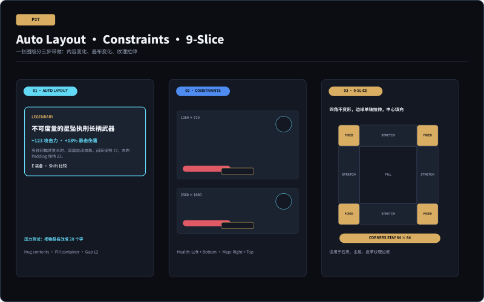
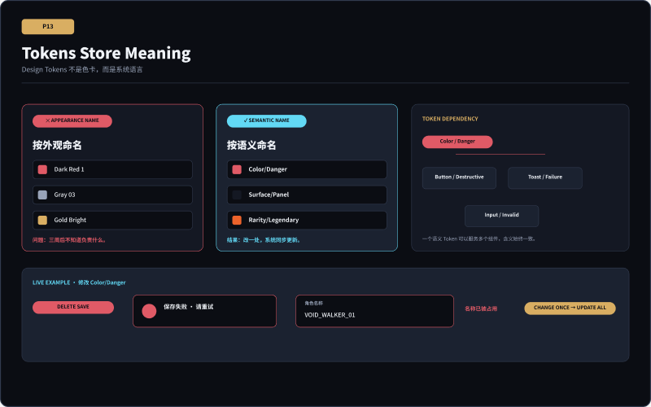
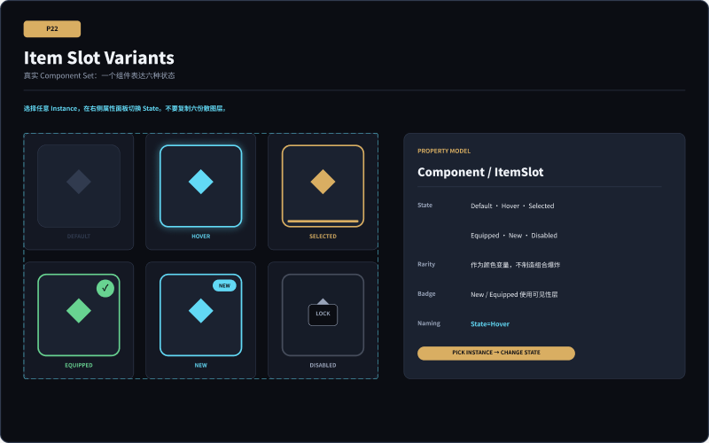
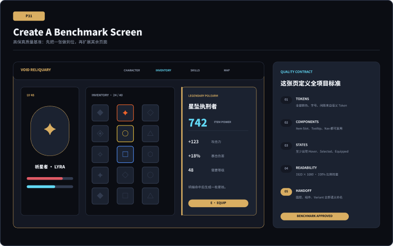

UIUX LESSON 04 · STUDENT CLASSROOM CHALLENGES
课堂只做五个最难操作
今天不要求完成全部 16 页。请跟着老师，只完成下面五个课堂挑战：Container、Variables、Variants、Constraints / 9-Slice、Benchmark。完成图和步骤始终显示；允许照着做，但必须亲手操作，不能复制整个完成 Frame。
开始之前
1 · 复制文件先把老师的 Figma 文件 Duplicate 到自己的 Drafts。不要在老师的原始示范上直接修改。
2 · 找对 Page原始文件使用 Page：UIUX_04 · 练习增强版；课程总文件中的副本可能放在 WEEK4。
3 · 手动重建可以抄答案、参数和命名，但不要直接复制粘贴整个完成画板。请按步骤亲手重建。
为什么必须使用自己的文件副本：Variables 是文件级系统。若全班同时修改一个共享文件的 Danger、Space 或 Radius，所有人的画面都会一起变化。
课堂挑战 · 只完成下面 5 项
预计学生操作约 65 分钟。每完成一项就停下来给老师检查，不要提前做后面的 16 页完整练习。
课堂范围：这五项是本节课唯一必做内容。P24 Skill Node Variants 和其他页面只用于课后重复，不计入今天课堂完成度。
1
Container / Auto Layout
让 Tooltip 背景真正跟着内容长高
Page：UIUX_04 · 练习增强版 / WEEK4Frame：P27 · Auto Layout · Constraints · 9-Slice12 分钟

照着完成图做：这一项只做 P27 左侧 Auto Layout，不做中间 HUD 和右侧 9-Slice。
为什么是课堂难点：选错父层、Hug/Fill 方向设置错误或保留独立背景矩形，都会让 Tooltip 无法随文字变化。
课堂照做
- 在 Layers 搜索并选中
Demo/AutoLayout/Tooltip，不要选文字层。 - 确认父级方向是 Vertical，Gap 为 12，四边 Padding 为 22。
- 在自己的区域重建父 Frame；把 Fill、Stroke、圆角直接加在父 Frame 上。
- 父 Frame 宽度设 Fixed 360，高度设 Hug contents。
- 文字层必须是父级直接子层；宽度设 Fill container，高度设 Hug contents。
- 把物品名称改成长到 20 个字，检查背景是否自动增高。
- 若背景不动，删除文字后面的独立背景矩形，再检查父 Frame 的 Fill。
成功标准：名称变长后 Tooltip 自动增高，左右 Padding 和 12px Gap 保持不变。
课堂提交：同一 Tooltip 的短名称与长名称两张截图。
2
Variables / Tokens
创建、修改并真实引用语义变量
Page：UIUX_04 · 练习增强版 / WEEK4Frame：P13 · Tokens Store Meaning；P2712 分钟

照着完成图做：先在 P13 改 Danger，再到 P27 把 Gap 引用到 Space/12。
为什么是课堂难点：“建立变量”和“让对象引用变量”是两步；只在表格里写名称，不算完成 Token 系统。
课堂照做
- 打开 Collection
UIUX04 / Semantic，确认 Mode 为Dark ARPG。 - 找到
Color/Semantic/Danger，记录原值#E05A66。 - 临时改为
#FF3B57，观察多个危险色对象一起变化。 - 按 Ctrl/Cmd + Z 恢复原值。
- 选中一个危险色对象，在 Fill 中确认显示变量名，而不是单独 HEX。
- 回到 P27，选中
Demo/AutoLayout/Tooltip父 Frame。 - 在 Gap 12 旁打开变量入口，选择
Space/12。 - 再次查看 Gap，确认显示 Variable 引用。
成功标准：修改 Danger 会同步影响多个对象；P27 的 Gap 显示
Space/12 引用。课堂提交：Variables 面板截图 + Danger 的 Fill 引用截图 + P27 Gap 引用截图。
3
Variants / Instance
把六张状态图做成一个可切换的 Component Set
Page：UIUX_04 · 练习增强版 / WEEK4Frame：P22 · Item Slot Variants18 分钟

照着完成图做：课堂只制作 ItemSlot；P24 SkillNode 留作课后重复。
为什么是课堂难点：Main Component、Component Set 和 Instance 是三个不同对象；选错对象就看不到 State 下拉。
课堂照做
- 在自己的区域重建 Default 物品格并整理图层命名。
- 全选该物品格，按 Ctrl/Cmd + Alt + K 创建 Main Component。
- 复制五次，分别制作 Hover、Selected、Equipped、New、Disabled。
- 确认六个对象仍是 Main Components，不是普通 Frame。
- 全选六个组件，右键选择 Combine as variants。
- 把属性统一命名为
State，六个值必须唯一。 - 切换到左侧 Assets，搜索你创建的 ItemSlot。
- 拖一个 Instance 到空白处。
- 保持 Instance 被选中，在右侧 State 下拉中依次切换六个值。
- 不要点击 Detach instance。
成功标准：同一个 Instance 可以连续切换六种状态，图层内容不丢失。
课堂提交：Component Set 全图 + 一个 Instance 的 State 下拉截图。
4
Constraints / 9-Slice
分清画布锚定与纹理拉伸
Page：UIUX_04 · 练习增强版 / WEEK4Frame：P27 · Auto Layout · Constraints · 9-Slice13 分钟
照着完成图做：这一项只做 P27 中间 HUD 与右侧九宫格；左侧 Auto Layout 已在挑战 1 完成。
为什么是课堂难点：Constraints 处理普通 Frame 中的位置；9-Slice 处理引擎里的纹理变形，两者不能互相替代。
课堂照做
- 在 Layers 搜索并展开
Demo/Constraints/HUD_1280。 - Health 设置 Left + Bottom。
- Minimap 设置 Right + Top。
- Hotbar 设置 Center + Bottom。
- 选中 HUD 父 Frame，向右拖宽；检查三个子层是否守住锚点。
- 重建右侧 3×3 九宫格：四角 fixed，上下边 stretch-x，左右边 stretch-y，中心 fill。
- 在图下写明：真正的 9-Slice 参数在 Unity/Unreal 等引擎中设置。
- 用一句话区分：Auto Layout 管内容、Constraints 管画布位置、9-Slice 管纹理。
成功标准：父 Frame 变宽后 HUD 锚点正确；九宫格四角明确标为固定区。
课堂提交：两个宽度的 HUD 截图 + 九宫格标注图。
5
Benchmark Screen
用一张页面建立后续作品的质量合同
Page：UIUX_04 · 练习增强版 / WEEK4Frame：P31 · Create A Benchmark Screen10 分钟

照着完成图检查：这不是再做一张新页面，而是检查你最完整的一页是否达到系统标准。
为什么是课堂难点：学生容易同时铺开多张半成品；Benchmark 要求先让一张复杂页面真正通过系统检查。
课堂照做
- 选择包含导航、核心任务、状态和反馈的复杂页面，优先背包页。
- 检查颜色和间距是否引用 Variables。
- 检查重复对象是否来自 Components / Instances。
- 检查 Default、Hover、Selected、Disabled 等关键状态。
- 在 100% 比例检查正文与数字可读性。
- 放入最长名称、最大数值和错误状态做压力测试。
- 依次勾选 Tokens、Components、States、Readability、Handoff。
- 五项没有全部通过前，不开始第二张页面。
成功标准：一张复杂页面同时通过五项合同，并能作为其他页面的复用来源。
课堂提交：Benchmark 全页截图 + 五项质量合同截图。
FINAL PRODUCTION MAP
五个课堂挑战，最后要长成六张高保真
课堂允许照着完成图抄操作，因为本节先练最难的系统动作；课后不能复制老师整页。请保留同一套 Variables、Components 与 Variants，换成你自己的职业幻想、内容和视觉规则。
01 · 战斗 HUD生命、资源、目标、技能冷却、危险与操作反馈。用到：Constraints、状态 Variables、HUD Slot Variants
02 · 人物信息属性、抗性、装备摘要、升级或加点入口。用到：Auto Layout、属性行 Component、语义 Tokens
03 · 背包 / 装备物品格、装备槽、Tooltip、比较与不可装备状态。先做这一张 Benchmark；综合使用五个挑战
04 · 技能树锁定、可学习、悬停、已学习、满级及前置条件。用到：SkillNode Variants、Variables、连接线规则
05 · 主菜单继续、人物、背包、技能、设置、退出与当前焦点。用到：Auto Layout、Button Variants、全局导航 Component
06 · 设置Toggle、Slider、Keybind、未保存、冲突与确认。用到：Auto Layout、Control Variants、Danger/Success Variables
推荐制作顺序：背包 / 装备 Benchmark → 人物信息 + 技能树 → 战斗 HUD → 主菜单 + 设置 → 六页一致性检查。Tooltip、装备比较、掉落提示和冲突提示是页面内部状态，不另算第七张。
课后参考：16 页完整练习 不要求课堂全部完成
下面保留所有答案和详细步骤，供没跟上的同学补做或课后复习。课堂完成度只看上面的五个挑战。